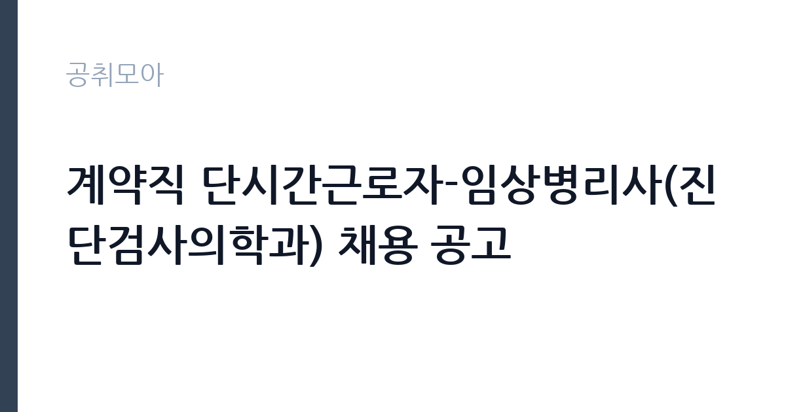

[공공기관] 계약직 단시간근로자-임상병리사(진단검사의학과) 채용 공고
국립중앙의료원 · 서울 · 마감 2026-11-18 (D-14) · 출처 잡알리오

한눈에 보는 모집 조건
| 기관 | 국립중앙의료원 |
|---|---|
| 공고명 | 계약직 단시간근로자-임상병리사(진단검사의학과) 채용 공고 |
| 고용형태 | 기간제 |
| 근무지 | 서울 |
| 게시일 | 2026-11-04 |
| 마감일 | 2026-11-18 (D-14) |
지원자격, 이렇게 읽으세요
- [필수] 임상병리사 면허 소지자
- ※ 근무시간 : 오전 06:30 ~ 08:30
- [우대] 채혈 경력자
기간제 근로자는 근로계약 기간이 정해진 신분입니다. 계약 기간과 갱신 가능 여부가 근로계약서에 명시되며 기간 만료 시 근로관계가 종료됩니다. 결원 보충이나 특정 사업 기간에 맞춰 채용되는 경우가 많아 업무 범위가 명확합니다. 이번 공고는 국립중앙의료원이 직접 진행하는 자체 전형입니다. 해당 직종의 면허나 자격증이 필수입니다. 임상병리사는 임상병리사 면허를, 방사선사는 방사선사 면허를 요구하는 식입니다. 신규 면허 취득 예정자도 지원 가능한지 공고문에서 확인해야 하며, 졸업 예정자와 자격 취득 예정자의 지원 가능 여부가 다르게 규정되는 경우가 있습니다. 한시임기제나 기간제로 채용되면 근무 기간이 명확히 정해집니다. 결격사유와 건강 상태 확인 절차가 있습니다. 경력 인정 여부는 증명서 기재 내용으로 결정되므로 직무 기술을 상세히 요청하십시오. 자격 취득 예정자는 채용 공고의 예정자 허용 조항을 먼저 확인해야 합니다. 조항이 없으면 지원 자체가 반려될 수 있습니다. 경력 요건은 총 경력이 아니라 해당 직무 경력만 인정하는 경우가 있으니, 증명서의 직무 기술을 함께 확인하십시오. 이 공고 원문에 적힌 응시 조건 문구는 '[필수] 임상병리사 면허 소지자' / '※ 상기 우대 조건 부합 시 입사지원서의 경력(경험)기술란에 기술'입니다. 문구를 그대로 읽고 본인 해당 여부를 하나씩 표시해 두면 서류 단계에서 탈락하는 일을 줄일 수 있습니다.
이 공고의 포인트
이 공고의 첫 번째 포인트는 고용 형태입니다. 계약 기간이 정해져 있어 근무 종료 시점이 명확합니다. 그만큼 짧은 기간에 어떤 실적을 남길지가 중요해집니다. 두 번째는 업무 범위가 명확하다는 점입니다. 보건의료 지원직 직무로 채용되므로 배치 이후 담당 업무가 크게 흔들리지 않습니다. 세 번째는 근무지입니다. 서울 지역 근무로 접근성은 좋지만 그만큼 지원자가 몰리는 지역이므로 경쟁률을 넉넉히 잡아야 합니다. 선발 절차가 단순한 편이어서 서류와 면접 준비에 집중할 수 있습니다. 같은 직무로 함께 올라온 공고 가운데 접수 마감이 가장 늦은 편이라 준비 시간을 상대적으로 확보할 수 있습니다. 선발 인원은 공고문에 명시되어 있으니 모집분야 항목을 함께 확인하십시오.
전형은 어떻게 진행되나
1차 서류, 2차 면접의 2단계로 진행되는 구성이 일반적입니다. 서류에서는 자격 요건과 경력 증빙을 확인하고, 면접에서는 실제 업무 수행 능력과 조직 적응을 봅니다. 직무에 따라 필기시험이나 실기, 컴퓨터 활용 시험이 추가되기도 하므로 공고문의 전형표를 먼저 확인하십시오. 단계별로 합격자만 다음 전형에 응시할 수 있고, 단계마다 응시 자격 확인 서류를 다시 제출해야 하는 경우가 있습니다. 최종합격자 발표 후에는 신원조회와 채용 신체검사가 남아 있습니다. 면접조 편성과 대기 시간이 공지되므로 당일 도착 시간을 여유 있게 잡으십시오.
원문에서 확인한 전형 방식
[필수] 임상병리사 면허 소지자 ※ 근무시간 : 오전 06:30 ~ 08:30 [우대] 채혈 경력자 ※ 상기 우대 조건 부합 시 입사지원서의 경력(경험)기술란에 기술
이런 분께 추천해요
- 해당 직종 면허를 보유한 분
- 검사 절차와 기록 관리에 정확성을 가진 분
- 개인정보 보호 규정을 엄격히 지킬 수 있는 분
지원 전 체크리스트
- 응시자격 요건과 경력 기준을 충족하는가 — 경력은 증명서로 입증해야 합니다
- 계약 기간과 근무 시작일·종료일을 확인했는가
- 제출서류 목록을 모두 준비했는가 — 누락 시 서류 단계에서 탈락합니다
- 접수 마감 2026-11-18 이전에 접수 방식을 확인해 제출했는가
모집 일정과 제출 타이밍
접수 마감은 2026-11-18이고 공고는 2026-11-04에 게시되었습니다. 준비 기간 14일 안에 서류 작성, 증빙 발급, 접수를 모두 마쳐야 하므로 주말을 포함해 일정을 미리 나누는 것이 좋습니다. 특히 경력 기술서나 직무수행계획서를 요구하는 공고는 작성에 시간이 걸리므로 첫날 초안을 잡으십시오. 서류 합격자 발표와 면접 사이 간격이 짧은 경우가 많아 면접 예상 질문은 서류 제출 전에 정리해 두는 편이 유리합니다. 마감 직전에는 접속이 몰리므로 여유를 두고 제출하십시오. 제출 서류는 공고문에 적힌 순서대로 정리하면 담당자가 확인하기 쉬워 누락이 줄어듭니다.
직무 이해하기: 공공기관
이 기관은 공공 서비스 제공을 목적으로 설립된 공공기관으로, 채용 공고에 따라 부서별 실무 인력을 선발합니다. 기관의 사업 범위와 조직 구성은 홈페이지에서 확인할 수 있으며 채용 절차는 자체 인사 규정을 따릅니다. 보건의료 지원직은 검사와 진료를 지원하는 실무를 맡습니다. 임상병리 업무는 검체를 채취·접수하고 장비로 분석한 뒤 결과를 검증하는 절차로 진행됩니다. 장비 정도 관리와 시약 재고 관리, 검사 결과 기록이 함께 따라붙습니다. 병무청이나 군 부대, 공공병원에서는 신체검사와 채용 신체검사 지원 업무 비중이 큽니다. 개인정보와 의료 정보를 다루므로 보안 규정 준수가 엄격합니다. 업무 도구와 장비는 기관이 지급하며, 지급 품목과 교체 주기는 부서 규정을 따릅니다. 업무 매뉴얼과 지침이 문서로 정리되어 있어 절차를 익히면 반복 업무는 빠르게 손에 붙습니다. 이 건의 근무 대상 지역·부서는 원문 기준 '진단검사의학과'입니다 원문에 '[필수] 임상병리사 면허 소지자'라는 조건이 명시되어 있습니다.
자기소개서 작성 팁
보건의료 지원직 지원서는 정확성과 책임감을 증명하는 데 집중하십시오. 실습이나 근무 중 검사 오류를 발견해 바로잡은 경험, 장비 관리 기록을 유지한 경험이 효과적입니다. 환자와 직접 대면하는 업무라면 응대 경험도 함께 쓰십시오. 짧은 계약 기간이라도 업무 공백을 만들지 않겠다는 의지를 밝히면 좋습니다. 문항별 글자 수 제한을 먼저 확인하고, 각 문항의 첫 문장에 결론을 배치하는 방식이 읽기 쉽습니다. 지원 동기는 기관의 어떤 사업에 기여하겠다는 한 문장으로 시작하고, 이어서 본인의 경험을 근거로 붙이십시오. 감점을 피하려면 다른 기관에 보낼 수 있는 범용 문장을 그대로 쓰지 않는 것이 중요합니다. 기관 이름과 사업명이 문장 안에 자연스럽게 들어가야 준비도가 드러납니다.
면접 준비 포인트
면접에서는 검사 절차 이해와 정확성에 대한 태도를 봅니다. 검사 결과가 비정상으로 나왔을 때 어떻게 확인하는지, 장비 오작동 시 어떻게 대응하는지 묻습니다. 개인정보를 다루는 직무이므로 보안 의식을 언급하는 것이 좋습니다. 업무가 몰리는 시간대의 우선순위 판단도 자주 나오는 질문입니다. 직무 특성상 체력이나 근무 시간에 대한 질문이 나올 수 있으므로 솔직하게 답하고 관리 계획을 함께 제시하십시오.
급여·근무조건 읽는 법
알리오(공공기관 경영정보 공개시스템) 2025년 결산 경영공시 기준으로 국립중앙의료원 일반정규직 1인당 평균보수액은 7,865만원, 공시된 신입사원 초임은 3,751만원입니다. 평균보수액은 기본급에 고정수당·실적수당·성과상여금·급여성 복리후생비를 모두 합산한 값이라 월 기본급만 보고 판단하면 실제와 크게 어긋납니다. 이번 공고는 기간제 채용이라 위 정규직 평균보수는 그대로 적용되지 않습니다. 기간제 보수는 기관의 기간제 임금 기준을 따르며 계약 기간이 함께 정해집니다. 보건의료 지원직의 보수는 임용 형태에 따라 달라집니다. 한시임기제공무원은 국가공무원 또는 지방공무원 보수규정상 연봉등급제를 적용받고, 임용 기간과 연봉등급이 공고문에 명시됩니다. 기간제 근로자라면 기관 임금표에 따라 월급이 정해지며, 교대·당직 수당이 붙는 경우가 있습니다. 면허 수당과 특수 근무 수당 포함 여부를 원문에서 확인하십시오. 2026년 적용 최저임금은 시급 10,320원, 월 환산 2,156,880원(주 40시간·209시간 기준)입니다. 고용노동부 고시 제2025-47호로 확정된 금액입니다. 공고문에 금액이 제시되지 않은 항목은 원문 보수표나 처우 설명에서 확인해야 하며 확인되지 않은 수치는 쓰지 않는 것이 원칙입니다. 비교할 때는 월 급여뿐 아니라 상여·명절휴가비·복지포인트·초과근무수당까지 포함한 연간 총액으로 계산하십시오. 기간제라면 계약 기간 동안의 총액을, 무기계약이라면 호봉 상승과 정년까지의 누적 소득을 기준으로 판단하는 편이 정확합니다.
자주 묻는 질문
- 선발 인원은 몇 명인가요?
공고문의 모집분야 항목에 직종별 인원이 표로 제시되어 있습니다. 첨부된 공고문 원문에서 확인하십시오. - 근무지는 어디인가요?
서울 지역의 국립중앙의료원 소속 근무지입니다. 세부 주소와 출퇴근 조건은 원문 공고문에서 확인할 수 있습니다. - 보수는 얼마인가요?
채용 신분(기간제)과 기관 임금 규정에 따라 정해지며 구체적인 금액은 공고문 처우 항목에 제시됩니다. 금액이 공개되지 않은 경우에는 원문의 보수표를 확인하십시오.
함께 보면 좋은 공고
[공공기관] 한국농어촌공사 영산강사업단 공무직(청소원) 보훈 장애 제한경쟁 채용공고 — 마감 2026-11-20[공공기관] 2027년 1차 박사후연수연구원, 석사후연수연구원 및 위촉연구원 공개채용 — 마감 2026-11-20[공공기관] 서울대학교치과병원 2027년 상반기 정규직(원무직) 채용 공고 — 마감 2026-11-18출처: 잡알리오 공개정보를 바탕으로 공취모아가 정리한 안내글입니다. 모집 조건·일정은 변경될 수 있으니 지원 전 반드시 원문 공고문을 확인하세요. 본 글은 정보 제공용이며 합격을 보장하지 않습니다.